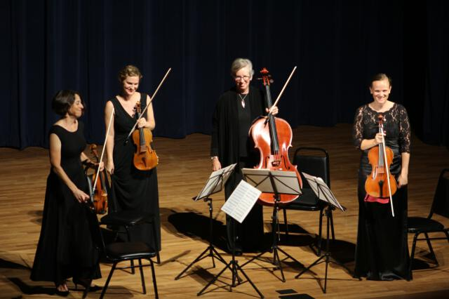

Hear what live strings can do to a room.
From classical ceremony favorites to contemporary songs your guests instantly recognize, live strings bring warmth, movement and emotion that a playlist simply can't replicate.


Classical polish. Contemporary personality.
Explore the sound and atmosphere we bring to ceremonies, cocktail hours and special events — from timeless classical repertoire to contemporary favorites reimagined for strings.

Wedding strings
Hear our ensemble in the setting it was made for: a beautiful celebration with real people, real timing and real emotion.
Watch performances
Classical repertoire
Elegant, expressive and beautifully balanced — the sound that gives a ceremony instant atmosphere.
Watch performances
Modern covers
Pop, rock, R&B, film and other favorites reimagined for strings — perfect for cocktail hour or a personal ceremony moment.
Watch performancesFrom Pachelbel to pop.
Our repertoire spans traditional wedding selections, classical favorites and contemporary covers. If a song matters to you and it isn't already in our library, ask us about a special request.
For ceremonies, we can help shape the musical arc from guest arrival through the processional, bridal entrance and recessional. For cocktail hour, we can shift into a broader mix of recognizable favorites.
Tell us what you love
The Quartet's superb playing contributed so much to the whole tone and feel of the ceremony.— Jim, SBSQ client
Already have a song in mind?
Send us your date, venue and musical ideas. We'll help you build a live soundtrack that feels unmistakably yours.